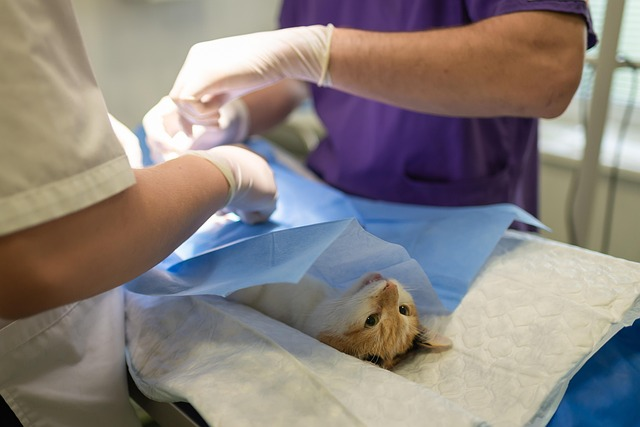

Ласкаво просимо до нашої галереї пухнастих пацієнтів! Тут ви знайдете зворушливі фото тварин, які пройшли лікування чи профілактичні огляди в нашій клініці. Кожне зображення — це історія турботи, довіри та професійної допомоги.
Ми пишаємося тим, що до нас звертаються власники котів, собак, гризунів та навіть екзотичних тварин. Більшість наших пацієнтів після візиту залишаються здоровими, активними та щасливими. Перегляньте світлини — можливо, тут є і ваш улюбленець!
Наш ветеринар робить складну операцію коту.
Наш ветеринар оглядає вуха собаці.
Наш самий маленький пацієнт.
Воротник для кішки, щоб вона не вилизувала ранки.